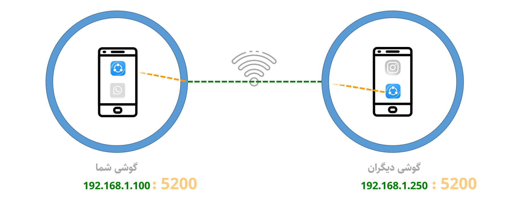
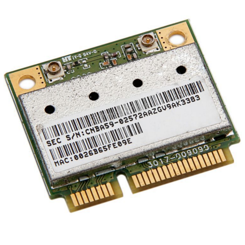
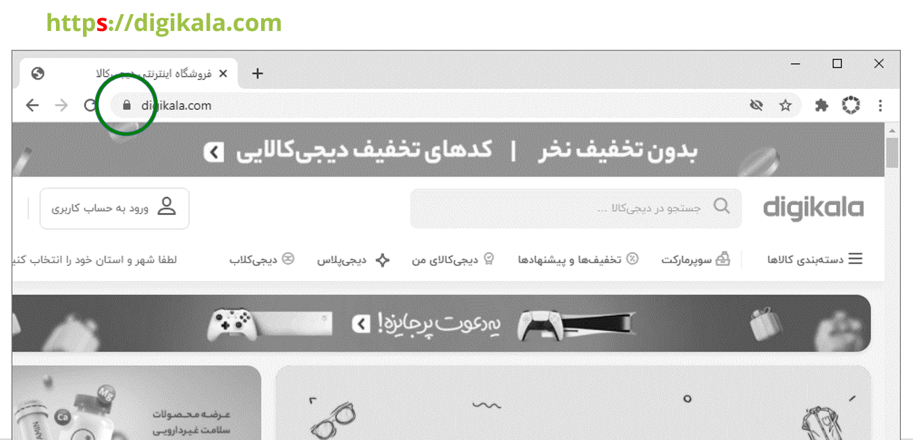
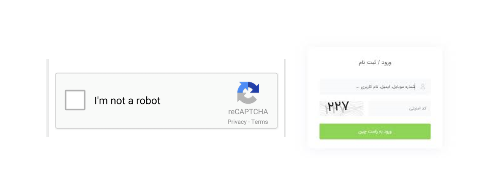
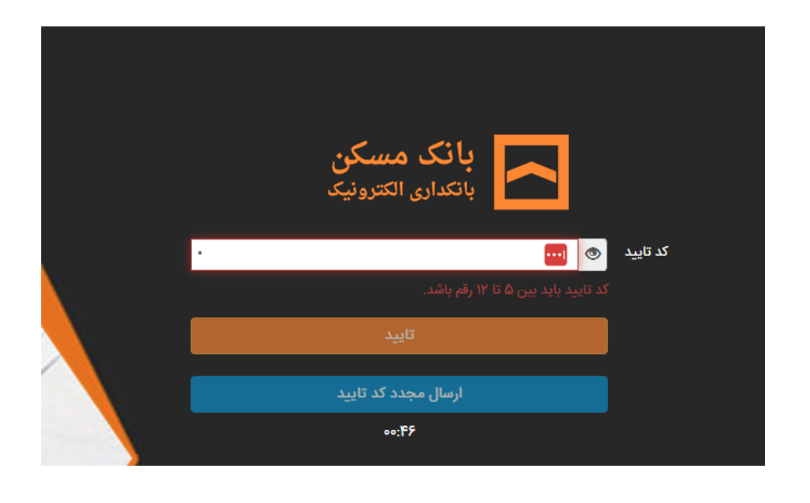

مفاهیم سایبری برای همه
ضروریات شبکه، اینترنت و امنیت سایبری
این راهنمای آنلاین به شما کمک میکند تا با اصول اولیه شبکه، اینترنت و امنیت سایبری آشنا شوید. این راهنما بهویژه برای افرادی طراحی شده است که پیشزمینه یا تجربهای در زمینه فناوری اطلاعات ندارند.
مزیت اصلی این راهنما، گردآوری مفاهیمی است که به شما یک دید کلی و مناسب ارائه میدهد. مفاهیم مطرح شده ارتباط معنایی دارند و ترتیب ارائه آنها مقدمهای برای درک مفاهیم دیگر است.
اگر نظر، سوال یا پیشنهادی دارید میتوانید از فرم نظردهی پایین همین راهنما استفاده کنید یا به آدرس ایمیل silvercover در جیمیل ارسال کنید.
- نسخه: 1.0
- نویسنده: حامد تکمیل
- تاریخ انتشار: 1 تیر 1403
- بروزرسانی: 23 تیر 1403
شبکه چیست؟
اتصال دو یا چند سیستم مانند کامپیوتر، لپتاپ، گوشی و ... با هدف رساندن و دریافت داده. انتقال دادهها میتواند با کابل چند رسانهای، کابل نوری یا بیسیم انجام شود.
اینترنت یک شبکه جهانی است که میلیونها شبکه کوچکتر را به هم متصل میکند و امکان ارتباط و تبادل اطلاعات را در سطح جهانی فراهم میسازد. اینترنت مجموعهای از شبکههاست.
شبکه محلی - Local Area Network یا به اختصار LAN
یک شبکه کامپیوتری است که محدوده جغرافیایی کوچکی مانند یک خانه، یک دفتر کار یا گروهی از ساختمانهای مجاور را پوشش میدهد.
اتصال لپتاپ و گوشی شما به صورت بیسیم (Wi-Fi) به مودم شما در خانه یک مثال از چنین شبکههایی است.
شبکه گسترده - Wide Area Network یا به اختصار WAN
یک شبکه کامپیوتری است که ناحیهٔ جغرافیایی نسبتاً وسیعی را پوشش میدهد (برای نمونه از یک کشور به کشوری دیگر یا از یک قاره به قارهای دیگر). این شبکهها معمولاً از امکانات انتقال خدمات دهندگان عمومی مانند شرکتهای مخابرات استفاده میکند.
چند مثال ساده از شبکههای گسترده (WAN):
- شبکه بانکی: خودپردازها، پایانههای فروش و شعب بانک در سراسر کشور به یک شبکه WAN متصل هستند تا تراکنشهای بانکی را به طور همزمان پردازش کنند.
- شبکه شرکتی: دفاتر یک شرکت در شهرهای مختلف به یک شبکه WAN متصل هستند تا کارکنان بتوانند به اشتراکگذاری فایلها، برقراری تماس و استفاده از منابع مشترک بپردازند.
- شبکه آموزشی: مدارس و دانشگاهها در یک منطقه یا کشور به یک شبکه WAN متصل هستند تا دانشآموزان و دانشجویان بتوانند به منابع آموزشی آنلاین دسترسی داشته باشند و با یکدیگر ارتباط برقرار کنند.
- شبکه دولتی: ادارات دولتی در سطوح محلی، ایالتی و ملی به یک شبکه WAN متصل هستند تا دادهها را به اشتراک بگذارند و با یکدیگر همکاری کنند.
پروتُکُل یا شیوه نامه یا آداب انجام کار - Protocol
در دنیای دیجیتال، دستگاهها و برنامههای مختلف برای برقراری ارتباط با یکدیگر و تبادل اطلاعات به یک زبان مشترک نیاز دارند. این زبان مشترک، پروتکل نامیده میشود و در خصوص اینکه مراحل انجام تبادلات چگونه است صحبت میکند. به بیان سادهتر: مجموعه ای از روالها برای برقراری و تداوم ارتباط در شبکه های کامپیوتری.
پروتُکُل اینترنت - IP
اینترنت شبکهای از شبکههاست که شامل شبکههای خصوصی، عمومی، دانشگاهی، تجاری و دولتی از مقایس محلی تا جهانی است. پروتکل اینترنت در خصوص اینکه مراحل انجام تبادلات چگونه است صحبت میکند و مجموعه ای از روالها برای برقراری و تداوم ارتباط در شبکه های کامپیوتری است.
توسعه پروتکل اینترنت (TCP/IP) یک تلاش تیمی بود که از دهههای گذشته در جریان است و در طول چندین دهه توسط افراد و سازمان های مختلف انجام شد. بدین منظور چند سازمان و کنسرسیوم (مثل IETF و ICANN) جهانی پدید آمده که در تعامل با نهادهای علمی از جمله دانشگاهها این مورد را پیش برده و از دل آن استانداردهایی را ارائه کردهاند.
وب - WWW
وِب جهانی (World Wide Web) یا به اختصار وب، مجموعهای از صفحات وب به هم پیوسته است که از طریق اینترنت قابل دسترسی هستند. این صفحهها (سایت ها مثل دیجیکالا) از طریق مرورگرهای وب مانند کروم یا فایرفاکس قابل مشاهده هستند. وب بخشی از اینترنت است.
کتابخانهای عظیم را تصور کنید که قفسههای آن تا نهایت سقف پر از کتاب است. این کتابخانه، همانند وب است و هر کتاب، حکم یک صفحه وب را دارد.
در این کتابخانه: کتابها: در موضوعات مختلفی مانند علم، تاریخ، ادبیات، سرگرمی و ... هستند. (محتوای وب در موضوعات مختلف ارائه میشود)قفسهها: کتابها را در دستههای مختلف مرتب میکنند. (وب سایتها موضوعات مختلف را در دسته بندی های مشخص ارائه می کنند)
نقشه: به شما کمک میکند تا کتاب مورد نظر خود را پیدا کنید. (موتورهای جستجو به شما کمک میکنند تا صفحات وب مورد نظر خود را پیدا کنید)
در وب 2، اطلاعات و خدمات توسط شرکتهای بزرگ فناوری مانند گوگل، فیسبوک و آمازون کنترل میشود.
در وب 3، اطلاعات و خدمات در یک شبکه غیرمتمرکز ذخیره و توزیع میشوند و هیچ نهاد مرکزی بر آن کنترل ندارد.
در وب 2، شما مالک دادههای خود نیستید و شرکتهای بزرگ فناوری از آنها برای تبلیغات هدفمند و سایر اهداف استفاده میکنند.
در وب 3، شما مالک دادههای خود هستید و میتوانید تصمیم بگیرید که چگونه از آنها استفاده شود.
در وب 2، اطلاعات شما در سرورهای مرکزی ذخیره میشود که آسیبپذیر در برابر هک و نشت اطلاعات هستند.
در وب 3، اطلاعات شما در یک شبکه پراکنده ذخیره میشود که جعل و دستکاری آن بسیار سختتر است.
آدرس آی پی - IP Address
نشانی عددی است که به هریک از دستگاهها و کامپیوترهای متصل به شبکه کامپیوتری که بر اساس پروتکل TCP/IP کار میکند، اختصاص داده میشوند. چیزی شبیه کدپستی برای هر خانه.
این آدرس مانند یک پلاک ثبتی عمل میکند و به سایر دستگاهها در شبکه امکان میدهد تا دستگاه مورد نظر را
پیدا کرده و با آن ارتباط برقرار کنند.
آدرسهای آی پی از اعداد و ارقام (به عنوان مثال 192.168.1.100) تشکیل شدهاند و هر دستگاه دارای یک آدرس آی
پی منحصر به فرد است.
دو نوع اصلی آدرس آی پی وجود دارد:
آدرس آی پی عمومی: این آدرس، دستگاه شما را در اینترنت به سایر دستگاهها معرفی میکند.
آدرس آی پی خصوصی: این آدرس، دستگاه شما را در شبکه محلی (مانند شبکه خانگی یا محل کار) به سایر
دستگاهها
معرفی میکند.
از 4 بخش 8 بیتی تشکیل شده که با نقطه از هم جدا میشوند. هر بخش (اُکتِت) میتواند مقداری بین 0 تا 255 داشته باشد. در مجموع، 4.3 میلیارد آدرس منحصر به فرد را ارائه میدهد. به دلیل تعداد محدود آدرسها، در حال اشباع شدن است. به تدریج با IPv6 جایگزین میشود، اما هنوز هم به طور گسترده مورد استفاده قرار میگیرد.
آدرس IP عمومی: این آدرس مثل آدرس پستی خانه شما در اینترنت است. ISP شما (شرکتی که اینترنت را به شما ارائه میدهد) این آدرس را به شما اختصاص میدهد. ISP شما از قبل تعدادی آدرس آی پی در اختیار دارد که حسب شرایط یکی از آنها را به شما اختصاص میدهد. این آدرس ممکن است دائمی (استاتیک) یا موقتی (دینامیک) باشد.
از قبل توسط نهادهای متولی به هر کشور تعدادی مشخص رنج آی پی اختصاص داده میشود و به همین شکل متولی کشوری تعدادی مشخص آدرس آی پی به هر ISP اختصاص میدهد.
آدرس IP خصوصی: این آدرس مثل آدرس واحد شما در آپارتمان است. این آدرس توسط روتر یا مودم شما به هر دستگاهی که به شبکه شما متصل میشود، اختصاص داده میشود.
اکثر روترها از DHCP (پروتکل پیکربندی پویای میزبان) برای خودکار کردن این فرآیند استفاده میکنند. هنگامی که دستگاهی به شبکه شما متصل میشود، از DHCP درخواست آدرس IP میکند و روتر یک آدرس منحصر به فرد از محدوده آدرسهای IP که برای شبکه شما اختصاص داده شده است، به آن اختصاص میدهد.
آیپی ایستا - آیپی پویا
آیپی پویا (Dynamic) با هر بار وصلشدن به شبکهٔ داخلی یا اینترنت تغییر میکند. اما آیپی ایستا (Static) اینطور نیست. به عنوان مثال، در بسیاری از مواقع زمانی که مودم اینترنت خود را خاموش و روشن میکنید آدرس آیپی شما عوض میشود. به عنوان مثال برای دسترسی به کنترل پانل یا بخش مدیریت دوربین های نظارتی از راه دور نیاز به آیپی ایستا داریم.
IP های پویا به طور معمول برای کاربران خانگی که به طور موقت به اینترنت متصل میشوند، استفاده میشود. IP های ایستا به طور معمول برای کسب و کارها، سرورها و دستگاههایی که نیاز به دسترسی دائمی و ثابت به اینترنت دارند، استفاده میشود. استفاده از IP ایستا معمولاً به پرداخت هزینه اضافی به شرکتی که از آن اینترنت (ISP) تهیه میکنید نیاز دارد.
آیپی نسخه 6 - IP v6
IPv4 از فضای آدرسی ۳۲ بیتی (به عنوان مثال 192.168.1.100) استفاده میکند. این فضا اجازهٔ آدرسدهی حدود ۴ میلیارد آدرس در اینترنت را میدهد. با توجه به اینکه امروزه بسیاری از دستگاهها افزون بر کامپیوترها مانند موبایلها، دوربینها و حتی لوازم خانگی و قاب عکسهای دیجیتال به اینترنت متصل میشوند، این فضا رو به اتمام است. IP وژن 5 نداریم چون تعداد آدرس های حاصل از آن کافی نیست.
IPv6 از آدرسهای 128 بیتی استفاده میکند که این امر تعداد آدرسهای قابل دسترس را به طور چشمگیری افزایش میدهد و مشکل کمبود آدرسIP را حل میکند.
نمونه آدرس آی پی نسخه 6 (IPv6):
2a00:1db9:85a3:0000:0000:8a2e:0370:7334
این آدرس آی پی نسخه 6 از 8 بخش 16 بیتی تشکیل شده است. هر بخش با دو نقطه (:) از بخشهای دیگر جدا میشود.
پورت یا درگاه - Port
پورت در شبکه مثل یک درب است که اطلاعات از طریق آن وارد یا خارج میشوند. هر درب شمارهای دارد و هر برنامه یا خدمت از یک درب خاص استفاده میکند تا اطلاعات درست به جای درست برود. وقتی شما در مرورگر وب خود، آدرس یک وب سایت را وارد میکنید، کامپیوتر شما از پورت 80 برای برقراری ارتباط با سرور وب سایت استفاده میکند. با آدرس آی پی (مثل کد پستی) به کامپیوتر مقصد متصل میشویم، سپس با دادن شماره پورت باعث اجرای نرم افزاری خاص بر روی آن سیستم مقصد می شویم.
سیستم فیلترینگ یا هر نوع سیستم پالایش ترافیک میتواند دسترسی به پورت خاصی را مسدود یا محدود کند و بدین ترتیب مانع از اجرای نرم افزارهایی خاص شود.
در تصویر زیر مفهوم پورت در ارتباط دو گوشی از طریق اپلیکیشن SHAREiT به تصویر کشیده شده است. در نوشتارهای فنی آیپی و پورت با دو نقطه از هم جدا نوشته می شود.
پهنای باند (Band Width) و سرعت اینترنت
پهنای باند و سرعت اینترنت اگرچه مرتبط هستند، اما دو مفهوم متفاوتاند.
پهنای باند: حداکثر مقدار دادهای که میتواند در یک زمان مشخص منتقل شود. مثل عرض یک لوله آب یا خیابان.
سرعت اینترنت: سرعت واقعی انتقال دادهها در یک لحظه خاص. مثل سرعت جریان آب در لوله.
پهنای باند بالاتر امکان سرعت بیشتر را فراهم میکند، اما عوامل دیگری نیز بر سرعت واقعی تأثیر میگذارند.
وقتی که شما یک سرویس اشتراک اینترنت با سرعت 4 مگابیت بر ثانیه تهیه میکنید، نهایتاً در حین استفاده در هر لحظه حداکثر با سرعت 4Mb می توانید فایلی را دانلود کنید. در طول مدت استفاده این سرعت نوسان دارد و ممکن است بسته به بار شبکه کمتر شود.
کارت شبکه و مَکآدرس یا آدرس فیزیکی - MAC Address
کارت شبکه، که به آن NIC ( مخفف Network Interface Card) نیز میگویند، یک قطعه سختافزاری است که به شما امکان میدهد کامپیوتر یا گوشی خود را به شبکه (یا اینترنت) متصل کنید. دو نوع کارت شبکه عمده وجود دارد، بی سیم و باسیم که در سایزهای مختلف برای کامپیوتر، موبایل و سایر دستگاه های قابل اتصال به شبکه عرضه میشود.
مک آدرس نشانی عددی است که به صورت سختافزاری در کارت واسط شبکه در کارخانه حک شدهاست. این نوع آدرسدهی موجب شناسایی منحصر به فرد کارت واسط شبکه در بین کارتها میشود.
نمونه مک آدرس:
01:23:45:67:89:ab
01-23-45-67-89-ab

در سیستم عامل ویندوز:
در نوار جستجوی ویندوز، "cmd" را تایپ کنید.
در نتایج جستجو، بر روی "Command Prompt" کلیک راست کنید و "Run as administrator" را انتخاب کنید.
در خط فرمان، دستور
ipconfig /all را تایپ کنید و Enter را فشار دهید.آدرس مک شما در کنار عبارت "Physical Address" یا "Ethernet Address" لیست خواهد شد.
در اندروید
از طریق رفتن به بخش تنظیمات (Settings) و گزینه درباره گوشی (About Phone) و یافتن عبارت مد نظر از فهرست موارد نمایشی.
سِروِر - Server
فرض کنید به رستوران میروید. شما به عنوان مشتری، سفارش خود را به گارسون میدهید. گارسون سفارش شما را به آشپزخانه میبرد و پس از آماده شدن، غذا را به شما تحویل میدهد. در دنیای دیجیتال هم، سرور نقشی مشابه گارسون را دارد. سرورها کامپیوترهای قدرتمندی هستند که در شبکههای کامپیوتری قرار دارند و وظیفهشان ارائه خدمات به سایر کامپیوترها و دستگاهها است.
مثال:
وقتی شما در مرورگر وب خود، آدرس یک وب سایت را وارد میکنید، کامپیوتر شما درخواستی را به سرور وب سایت
ارسال میکند. سرور وب سایت، محتوای مورد نظر شما را از پایگاه داده خود پیدا میکند و آن را به کامپیوتر
شما ارسال میکند. در این مثال، سرور وب سایت مانند گارسونی عمل میکند که غذای شما را از آشپزخانه (پایگاه
داده) به شما (کامپیوتر) تحویل میدهد.
انواع سرور:
سرور وب: برای میزبانی از وب سایت ها و ارائه آنها به کاربران در اینترنت استفاده می شود.
سرور ایمیل: برای ارسال و دریافت ایمیل استفاده می شود.
سرور پایگاه داده: برای ذخیره و مدیریت داده ها استفاده می شود.
سرور فایل: برای ذخیره و به اشتراک گذاری فایل ها استفاده می شود.
سرور چاپ: برای مدیریت و کنترل چاپگرها استفاده می شود.
دفترچه تلفن اینترنت یا DNS - Domain Name System
فرض کنید میخواهید با دوستتان که در شهر دیگری زندگی میکند تماس بگیرید. برای این کار، به دفترچه تلفن خود مراجعه میکنید و شماره تلفن او را پیدا میکنید. در دنیای اینترنت هم، DNS نقشی مشابه دفترچه تلفن را دارد. DNS مخفف Domain Name System است و سیستمی است که نامهای دامنه قابل خواندن توسط انسان (مانند www.digikala.com) را به آدرسهای IP (مانند 142.250.189.142) که توسط کامپیوترها قابل خواندن هستند، ترجمه میکند. حفظ کردن آدرس های آی پی برای ما انسانها سخت هست اما تخصیص نام مثل digikala.com کار را ساده تر می کند.
مثال:
وقتی شما در مرورگر وب خود، آدرس "www.digikala.com" را وارد میکنید، کامپیوتر شما درخواستی را به سرور DNS
ارسال میکند. سرور DNS، آدرس IP مربوط به دیجیکالا را پیدا میکند و آن را به کامپیوتر یا گوشی شما ارسال
میکند. سپس، کامپیوتر شما با استفاده از این آدرس IP، به سرور وب سایت دیجیکالا متصل میشود و صفحه اصلی آن
را برای شما نمایش میدهد.
سرورهای DNS در سراسر جهان توزیع شدهاند. این امر به منظور توزیع بار ترافیک و اطمینان از دسترسی سریع به اطلاعات DNS در هر نقطه از جهان انجام میشود. اکثر ISPها (ارائه دهندگان خدمات اینترنت مثل ایرانسل یا شاتل) سرورهای DNS خود را دارند که به طور پیش فرض برای کاربرانشان تنظیم شده است. همچنین می توانید از سرورهای DNS عمومی مانند Google Public DNS یا OpenDNS استفاده کنید.
دامین اینترنتی - Domain
همان آدرسی هست که شما با وارد کردن آن در مرورگرتان وارد یک سایت می شوید. مثل آدرس سایت دیجیکالا: www.digikala.com
حفظ کردن آدرس های آی پی برای ما انسانها سخت هست اما تخصیص نام مثل digikala.com کار را ساده تر می کند. در واقع با این نام دامنه که به یک آدرس آپی پی منحصر به فرد متصل است ما می توانید به سرور دیجیکالا متصل شویم و محتوای آن را در مرورگر خود تماشا کنیم. فرایند اتصال این نام به آدرس آیپی سرور توسط سرور DNS انجام میشود.
فضای میزبانی یا هاست - Host
خانه ای برای وب سایت در اینترنت!
فرض کنید می خواهید یک فروشگاه آنلاین راه اندازی کنید. برای این کار به دو چیز مهم نیاز دارید:
محصولات برای فروش: این محصولات همان محتوای وب سایت شما مانند متن، تصاویر و ویدئو هستند.
مکانی برای نگهداری و نمایش محصولات: این مکان همان فضای میزبانی یا هاست است.
هاست فضایی است در یک سرور (کامپیوتر قدرتمند) که در اینترنت قرار دارد. شما می توانید فایل های وب سایت خود
را در این فضا ذخیره کنید تا در دسترس کاربران در سراسر جهان قرار بگیرند.
انواع هاست:
هاست اشتراکی: در این نوع هاست، فضای سرور بین چندین وب سایت به اشتراک گذاشته می شود. این نوع هاست
ارزان تر است، اما منابع کمتری را ارائه می دهد.
هاست اختصاصی: در این نوع هاست، یک سرور کامل به طور اختصاصی به وب سایت شما اختصاص داده می شود. این
نوع هاست گران تر است، اما قدرت و انعطاف پذیری بیشتری را ارائه می دهد.
هاست ابری: در این نوع هاست، وب سایت شما بر روی چندین سرور اجرا می شود که در فضای ابری قرار دارند.
این نوع هاست مقیاس پذیری و پایداری بالایی را ارائه می دهد.
سرور ابری به زبان ساده، شبیه به اجاره کردن یک کامپیوتر قدرتمند در اینترنت است. به جای اینکه خودتان یک کامپیوتر فیزیکی بخرید و نگهداری کنید، میتوانید از منابع یک سرور بزرگ که در یک مرکز داده قرار دارد استفاده کنید.
بسیاری از سرویس دهندگان مطرح مثل دیجیکالا یا اسنپ نیازمند سرورهای اختصاصی با منابع اختصاصی خود هستند و بر همین اساس به سمت مدل های پیشرفته تر و قوی تر سرور میروند که در ادبیات این حوزه به این قبیل سرورها VPS و مدل پیشرفته تر Dedicated Server (سرور اختصاصی) میگویند.
فصل دوم: مفاهیم امنیتی پرکاربرد
گزیدهای از مهمترین و پرتکرارترین عبارات رایج در حوزه امنیت سایبری در این فصل فهرست شده است.
بد افزار - Malware
هر نوع نرمافزاری است که از روی عمد برای آسیبزدن به کامپیوتر، گوشی، سِروِر یا شبکه کامپیوتری طراحی شدهاست. موارد زیر همگی بدافزار تلفی میشوند.
- ویروس
- کرم
- تروجان
- باج افزار
ویروس
نوعی برنامه کامپیوتری است که در هنگام اجرای برنامه، با دستکاری سایر نرم افزارها و وارد کردن کد مخصوص به خود، خود را تکرار میکند. هنگامی که این تکثیر موفقیتآمیز باشد، گفته میشود مناطق آسیب دیده به ویروس رایانه ای آلوده میشوند.
کِرم - Worm
کِرم به برنامهای گفته میشود که توانایی بازتولید خود را داراست، و با استفاده از شبکه کپیهای خود را به دیگر سیستم های موجود در شبکه میفرستد. برخلاف ویروس، کرمها خود را به برنامههای دیگر نمیچسباند. همچنین کرمها عموماً با اشغال پهنای باند به شبکه آسیب میرسانند در حالی که ویروسها در بیشتر اوقات باعث خرابی برنامههای موجود در کامپیوتر آلوده و از دست رفتن اطلاعات موجود در آن میشوند. هدف کرمها معمولاً استفاده از منابع میباشد و میتواند در دسترسی شما به منابع تأخیر بیندازد.
اسب تِروآ - Trojan Horse
در طول جنگ تروا، یونانیها پس از محاصره ناموفق شهر تروا، نقشهای حیلهگرانه برای ورود به شهر طراحی کردند. آنها مجسمه عظیمی از یک اسب چوبی ساختند و سربازان خود را در داخل آن پنهان کردند. سپس وانمود کردند که عقبنشینی میکنند و اسب را به عنوان هدیهای برای تروجانها رها میکنند.
تروجانها (ساکنین تروآ) که فریب یونانیها را خورده بودند، اسب را به داخل شهر بردند. شب هنگام، سربازان یونانی از اسب بیرون آمده و دروازههای شهر را به روی ارتش خود گشودند. یونانیها به شهر تروا حمله کرده و آن را ویران کردند.
امروزه از اصطلاح اسب تروآ برای اشاره به هر برنامه یا دستگاهی استفاده میشود که ظاهری بیضرر دارد، اما در واقع مخرب است. این برنامهها یا دستگاهها میتوانند حاوی بدافزار باشند که به سیستم کامپیوتری شما آسیب میرساند یا اطلاعات شما را سرقت میکند.
مثال:
فرض کنید شما یک فایل پیوست ایمیل را از منبعی ناشناس دریافت میکنید. ممکن است این فایل حاوی یک اسب تروآ
باشد که در صورت باز کردن آن، بدافزار به سیستم شما نفوذ میکند و اطلاعات شخصی شما را به سرقت میبرد.
درِ پشتی - Backdoor
فرض کنید خانهای دارید و میخواهید برای نظافت به کسی دسترسی بدهید. به جای اینکه هر بار زنگ بزنید و منتظر بمانید تا در را باز کنید، میتوانید به او کلید یدکی بدهید تا هر وقت خواست، بدون نیاز به شما وارد خانه شود.
در پشتی یا بَکدُر در دنیای کامپیوتر هم همین کار را میکند. راه مخفی است که به افراد غیرمجاز اجازه میدهد بدون عبور از مراحل امنیتی معمولی به یک سیستم کامپیوتری، شبکه یا برنامه دسترسی پیدا کنند.
درهای پشتی ممکن است از قبل در سامانه وجود داشته باشند یا اینکه فرد نفوذگر با فریب کاربر، او را نسبت به نصب در پشتی ترغیب کند (مانند ارسال پیوستهای آلوده در ایمیل).
یک شرکت نرم افزاری ممکن است یک در پشتی در برنامه خود تعبیه کند تا بتواند اطلاعات استفاده شما را جمع آوری کند یا تبلیغات را به شما نشان دهد.
حمله سایبری - Cyber Attack
هرگونه تلاش برای افشا، تغییر، غیرفعال کردن، تخریب، سرقت یا دسترسی غیرمجاز یا استفاده غیرمجاز از یک دارایی دیجیتال است. حمله سایبری هر نوع مانور تهاجمی است که سامانههای اطلاعات رایانه ای، زیرساختها، شبکههای رایانه ای یا دستگاههای رایانه شخصی را هدف قرار میدهد.
مهاجم یک شخص یا فرایندی است که سعی در دسترسی به دادهها، کارکردها یا سایر مناطق محدود سامانه بدون مجوز، بهطور بالقوه با قصد مخرب دارد.
انواع حملات سایبری:
بدافزار: هکر میتواند با استفاده از بدافزار، مانند ویروس، کرم یا اسب تروآ، به سیستم شما نفوذ کند
و به اطلاعات شما دسترسی پیدا کند یا به آن آسیب برساند.
فیشینگ: هکر با ارسال ایمیل یا پیامهای جعلی، شما را فریب میدهد تا اطلاعات شخصی خود را مانند رمز
عبور یا شماره کارت اعتباری را به او بدهید.
حمله DoS (Denial of Service): هکر با ارسال حجم زیادی از ترافیک به سمت وب سایت یا سرور شما، آن را
از دسترس خارج میکند.
حمله هک کردن: هکر با استفاده از مهارتهای خود، نقاط ضعف امنیتی سیستم شما را پیدا میکند و از آنها
برای نفوذ به سیستم شما استفاده میکند.
باج افزار - Ransomware
گونهای از بدافزارها هستند که دسترسی به سیستم را محدود میکنند و ایجادکننده آن برای برداشتن محدودیت درخواست باج میکند. برخی از انواع آنها روی فایلهای هارددیسک رمزگذاری انجام میدهند و برخی دیگر ممکن است به سادگی سیستم را قفل کنند.
جفنگ یا اسپَم یا هرزنامه - Spam
به معنای پیام (هر نوع پیامی از جمله SMS) یا نامه الکترونیکی است که بدون درخواست گیرنده و برای افراد بیشماری فرستاده میشود. یکی از مشهورترین انواع اسپم هرزنامه است. اما اسپم میتواند شامل اسپم در پیامرسانها، اسپم در گروهها، اسپم در بخش نظرات سایت ها و شبکه های اجتماعی هم بشود.
هدف از ارسال اسپم:
تبلیغات: اسپمرها (ارسال کنندگان اسپم) از اسپم برای تبلیغات محصولات یا خدمات خود به صورت ناخواسته
و
بدون رضایت شما استفاده میکنند.
فیشینگ: اسپمرها از طریق اسپم، لینکهای فریبنده برای هدایت شما به وب سایتهای جعلی ارسال
میکنند تا اطلاعات شخصی شما مانند رمز عبور یا شماره کارت اعتباری را به سرقت ببرند.
پخش بدافزار: اسپمرها ممکن است از طریق اسپم، بدافزار مانند ویروس یا کرم را به سیستم شما
تزریق کنند تا به اطلاعات شما آسیب برسانند یا آنها را سرقت کنند.
مضرات اسپم:
آزاردهنده: اسپم میتواند بسیار آزاردهنده باشد و وقت و حوصله شما را تلف کند.
خطرناک: اسپم میتواند حامل بدافزار یا لینکهای فیشینگ باشد که به سیستم شما آسیب میرساند یا
اطلاعات شما را سرقت میکند.
غیرقانونی: ارسال اسپم در بسیاری از کشورها غیرقانونی است.
مهندسی اجتماعی - Social Engineering
فرض کنید یک سارق میخواهد به خانه شما دستبرد بزند. به جای اینکه زور بازو به کار ببرد، زنگ خانه شما را میزند و با معرفی خود به عنوان یک مامور یا فرد معتبر، از شما میخواهد که در را باز کنید. مهندسی اجتماعی هم دقیقا همین کار را میکند، با این تفاوت که در دنیای دیجیتال اتفاق میافتد. در مهندسی اجتماعی، هکر از فریب و حیله گری برای متقاعد کردن شما به انجام کاری استفاده میکند که به نفع اوست، اما میتواند به شما آسیب برساند یا اطلاعات شما را به سرقت ببرد.
تکنیکهای مهندسی اجتماعی:
فریبکاری: هکر ممکن است با معرفی خود به عنوان یک فرد یا سازمان معتبر، شما را فریب دهد تا اطلاعات
شخصی خود را به او بدهید یا روی یک لینک فریبنده کلیک کنید.
ایجاد حس اضطرار: هکر ممکن است با ایجاد حس اضطرار یا ترس، شما را وادار به اقدام سریع بدون فکر کردن
کند.
سوء استفاده از اعتماد: هکر ممکن است از اعتماد شما به دیگران سوء استفاده کند و شما را فریب دهد تا
اقداماتی را انجام دهید که به ضرر شماست.
به دستکاری یا تحریک روانشناختی افراد (عمدتا فریب) در انجام کارهای خاص یا افشای اطلاعات اشاره دارد. این اصطلاح با مهندسی اجتماعی در علوم سیاسی از این نظر تفاوت دارد که مهندسی اجتماعی در علوم سیاسی تمرکزی روی افشای اطلاعات محرمانه ندارد.
تلهگذاری یا فیشینگ - Phishing
به تلاش برای به دست آوردن اطلاعاتی مانند نام کاربری، گذرواژه، اطلاعات حساب بانکی و مانند آنها از طریق جعل یک وبسایت، آدرس ایمیل و مانند آنها گفته میشود. یا به بیان سادهتر هنگامی که شخصی تلاش میکند دیگری را فریب دهد تا اطلاعات شخصی او را در اختیارش بگیرد، یک حمله فیشینگ رخ میدهد و یک بازار غیرقانونی چند هزار میلیاردی را تشکیل داده است.
انواع فیشینگ:
فیشینگ ایمیل: هکر یک ایمیل جعلی ارسال میکند که در آن شما را به بازدید از وب سایت جعلی یا کلیک بر
روی یک لینک دعوت میکند.
فیشینگ وب سایت: هکر یک وب سایت جعلی ایجاد میکند که شبیه به وب سایت یک سازمان معتبر است.
فیشینگ پیام کوتاه: هکر یک پیام کوتاه جعلی ارسال میکند که در آن شما را به بازدید از وب سایت جعلی
یا تماس با یک شماره تلفن جعلی دعوت میکند.
فیشینگ صوتی: هکر با شما تماس تلفنی برقرار میکند و خود را به عنوان یک نماینده از یک سازمان معتبر
معرفی میکند و از شما میخواهد که اطلاعات شخصی خود را به او بدهید.
آسیب پذیری - Vulnerability
نقطهضعفی است که به افراد غیرمجاز اجازه میدهد بدون عبور از مراحل امنیتی معمولی به یک سیستم کامپیوتری، شبکه یا برنامه دسترسی پیدا کنند.
رمزگذاری - Encryption
روند رمز کردن پیامها یا اطلاعات است به گونه ای که تنها افراد مجاز قادر به خواندن آن باشند. پیام یا اطلاعات با استفاده از یک الگوریتم، رمزگذاری شده و علائم رمزی به وجود میآید که فقط در صورت رمزگشایی قابل خواندن هستند.
رمزنگاری کلید عمومی - Public-key Cryptography
تصور کنید که میخواهید نامهای محرمانه برای دوستتان ارسال کنید. شما دو قفل و دو کلید دارید:
قفل عمومی: این قفل را میتوانید به همه بدهید. هر کسی که به نامه شما دسترسی دارد میتواند با
استفاده از این قفل آن را قفل کند.
قفل خصوصی: این کلید را فقط شما دارید. فقط شما با استفاده از این کلید میتوانید نامه را باز
کنید.
رمزنگاری کلید عمومی هم دقیقا همین کار را میکند، با این تفاوت که به جای نامه، از اطلاعات دیجیتال مانند
ایمیل، پیامهای متنی یا فایلها استفاده میشود.
در اینجا چند نمونه از کاربردهای رایج رمزنگاری کلید عمومی برای عموم مردم آورده شده است:
1. مرورگر وب:
هنگامی که آدرس یک وب سایت را در مرورگر خود وارد میکنید و علامت قفل در نوار آدرس مشاهده میکنید،
نشاندهنده این است که از رمزگذاری برای محافظت از تبادل اطلاعات بین شما و وب سایت استفاده میشود. این امر
با استفاده از رمزنگاری کلید عمومی برای رمزنگاری اطلاعات و تأیید هویت وب سایت انجام میشود.

2. ایمیل:
بسیاری از سرویسهای ایمیل مانند Gmail و Yahoo Mail از رمزنگاری کلید عمومی برای محافظت از ایمیلهای شما
در برابر شنود و خواندن توسط افراد غیرمجاز استفاده میکنند. این کار با امضای دیجیتال ایمیلها و رمزنگاری
محتوای آنها انجام میشود.
3. پیامهای فوری:
برنامههای پیامهای فوری مانند سیگنال، واتساپ و تلگرام (در حالت Secret Chat) از رمزنگاری کلید عمومی برای
محافظت از حریم خصوصی مکالمات شما استفاده میکنند. این کار با رمزنگاری پیامها و تأیید هویت طرفین مکالمه
انجام میشود.
4. بانکداری آنلاین:
هنگامی که از طریق اینترنت به حساب بانکی خود دسترسی پیدا میکنید، از رمزنگاری کلید عمومی برای محافظت از
اطلاعات شما در برابر هکرها و سارقان استفاده میشود. این کار با رمزنگاری اطلاعات ورود به سیستم شما و
محافظت از تراکنشهای آنلاین شما انجام میشود.
5. فروشگاههای آنلاین:
هنگامی که به صورت آنلاین خرید میکنید، از رمزنگاری کلید عمومی برای محافظت از اطلاعات پرداخت شما مانند
شماره کارت اعتباری شما استفاده میشود. این کار با رمزنگاری اطلاعات پرداخت شما و تأیید هویت فروشگاه
آنلاین انجام میشود.
6. امضای دیجیتال:
از رمزنگاری کلید عمومی برای امضای دیجیتال اسناد الکترونیکی مانند قراردادها و فاکتورها استفاده میشود.
7. احراز هویت:
از رمزنگاری کلید عمومی برای تأیید هویت شما در هنگام ورود به وب سایتها و برنامههای آنلاین استفاده
میشود. این کار با استفاده از کلید عمومی شما برای تأیید هویت شما انجام میشود.
8. VPN:
از رمزنگاری کلید عمومی در شبکههای خصوصی مجازی (VPN) برای محافظت از ترافیک اینترنت شما در برابر جاسوسی و
شنود استفاده میشود. این کار با رمزنگاری ترافیک شما و محافظت از آن در برابر هکرها و ISP (شرکت ارائه
دهنده اینترنت) شما انجام میشود. البته ممکن است برخی از VPN ها چنین نکنند و برعکس سو استفاده کنند.
رمزگذاری سَرتاسَر - End-to-End Encryption
یک سیستم ارتباطی است که تنها افراد دو طرف ارتباط، قادر به خواندن پیامها هستند. در این شیوه ارتباطی، شنود کلیدهایی که برای رمزگذاری مکالمه استفاده میشود برای هیچ فردی از جمله رساننده خدمات اینترنتی و ارائه دهندگان خدمات مخابراتی امکانپذیر نخواهد بود. در رمزگذاری سرتاسر از آنجا که هیچ شخص دیگری امکان کشف دادههای در حال مبادله یا ذخیره را ندارد، امکان مراقبت و دستکاری غیرممکن است.
برخی از مرورگرهای وب مانند Tor از رمزنگاری سرتاسر برای محافظت از فعالیت آنلاین شما در برابر ردیابی و نظارت استفاده میکنند.
کیلاگر- Keylogger
کیلاگر، به نرمافزارهایی گفته میشود که کلیدهای فشردهشده بر روی صفحه کلید را ذخیره میکنند؛ به صورتی که میتوان از آن، اطلاعات تایپ شدهٔ کاربران؛ از قبیل رمزهای عبور آنها را سرقت کرد. کیلاگرها را میتوان هم به صورت نرمافزاری و هم به صورت سختافزاری مورد استفاده قرار داد.
مشابه تصویر دلیل ارائه یک صفحه کلید نرم افزاری در برخی از سرویس ها از جمله درگاه پرداخت جلوگیری از سرقت رمز تایپ شده توسط همین کیلاگرها است.

جستجوی فراگیر – Brute Force
حدس و گمان تا رسیدن به هدف!
فرض کنید قفلی دارید که رمز آن را گم کردهاید. دو راه برای باز کردن آن دارید:
کلیدها را امتحان کنید: میتوانید تک تک کلیدها را امتحان کنید تا کلید درست را پیدا کنید. این روش
جستجوی فراگیر یا Brute Force نامیده میشود.
از یک متخصص کمک بگیرید: میتوانید از یک متخصص قفلساز کمک بگیرید تا قفل را برای شما باز کند.
در دنیای کامپیوتر، هکرها از جستجوی فراگیر برای حدس زدن رمز عبور، پین یا کلید برای ورود به سیستمها، حسابهای کاربری یا شبکهها استفاده میکنند. حال اگر طول رمز عبور کوتاه نباشد و حاوی کاراکترهای مختلف باشد این کار برای هکر سخت تر میشود.
به همین دلیل در صفحه ورود یا ثبت نام سرویسها از ابزاری موسوم به کَپچا (CAPTCHA) استفاده میکنند تا مهاجم مهار شود و نتواند مکرر و بیقفه کلمات عبور را امتحان کند.
حل کردن کپچا زمان میبرد، که سرعت این حملات را به طور قابل توجهی کاهش میدهد. برای حل کردن کپچا به انسان نیاز است، که برای مهاجمان گران است.
تصدیق هویت چندعاملی - Multi-factor Authentication
قفلی با چند کلید!
فرض کنید در حال ورود به خانه خود هستید. به جای یک کلید، از دو کلید استفاده میکنید:
کلید اول: این کلید را برای باز کردن در استفاده میکنید.
کلید دوم: این کلید را برای فعال کردن سیستم امنیتی استفاده میکنید.
تصدیق هویت چندعاملی (MFA) یا احراز هویت دو عاملی (2FA) نیز به همین صورت عمل میکند، با این تفاوت که به جای ورود به خانه، از آن برای ورود به حسابهای آنلاین خود استفاده میشود. MFA یک لایه امنیتی اضافی به فرآیند ورود به سیستم شما اضافه میکند. علاوه بر نام کاربری و رمز عبور خود، باید اطلاعات دیگری نیز مانند کد ارسال شده به تلفن همراهتان یا پاسخ به یک سوال امنیتی را وارد کنید.
حمله محرومسازی از سرویس - Denial of Service
سیل تقاضا برای فلج کردن سیستم!
فرض کنید صاحب یک رستوران هستید. ناگهان، تعداد زیادی سفارش جعلی به صورت آنلاین دریافت میکنید که باعث
میشود تمام منابع شما اشغال شود و دیگر نتوانید به مشتریان واقعی خود خدمات ارائه دهید. این یک حمله
محرومسازی از سرویس (DoS) است.
حمله DoS به نوعی حمله سایبری گفته میشود که هدف آن از کار انداختن یک سیستم یا شبکه با سیل تقاضا است. این
حمله میتواند به روشهای مختلفی انجام شود، از جمله:
- ارسال حجم زیادی از درخواستهای جعلی به یک وب سایت یا سرور.
- ارسال بستههای داده مخرب به یک شبکه.
- استفاده از باتنت (شبکهای از رایانههای آلوده) برای راه اندازی یک حمله هماهنگ.
بات نت - Botnet
تصور کنید یک ارتش از رباتها دارید که میتوانید از آنها برای انجام هر کاری که میخواهید استفاده کنید. این دقیقاً همان کاری است که باتنتها انجام میدهند.
باتنت یک شبکه از کامپیوترهای (یا گوشی) آلوده است که توسط یک هکر یا گروهی از هکرها کنترل میشود. این کامپیوترها، که به آنها بات یا زامبی گفته میشود، بدون اطلاع یا رضایت صاحبان آنها آلوده شدهاند.
عمدتاً هکرها از باتنتها برای انجام فعالیتهای مخرب زیر استفاده میکنند:
حمله DoS: ارسال حجم زیادی از تقاضا به یک وب سایت یا سرور برای از کار انداختن آن.
ارسال ایمیلهای اسپم: ارسال ایمیلهای ناخواسته به تعداد زیادی از افراد.
سرقت اطلاعات: سرقت اطلاعات شخصی مانند اطلاعات بانکی یا اطلاعات کارت اعتباری.
استخراج ارزهای دیجیتال: استفاده از قدرت پردازش باتها برای استخراج ارزهای دیجیتال.
نفوذ و تغییر ظاهر سایت - Defacement
فرض کنید صاحب یک فروشگاه هستید. ناگهان، کسی به فروشگاه شما نفوذ میکند و روی دیوارهای آن شعارها و نقاشیهای توهینآمیز میکشد. این دقیقاً همان کاری است که هکرها در حمله نفوذ و تغییر ظاهر سایت (Defacement) انجام میدهند.
حمله نفوذ و تغییر ظاهر سایت به نوعی حمله سایبری گفته میشود که هدف آن تغییر ظاهر یک وب سایت است. هکرها با نفوذ به سرور وب سایت، میتوانند محتوای آن را تغییر داده یا پیامهای خود را به آن اضافه کنند.
اهداف حمله نفوذ و تغییر ظاهر سایت:
آسیب رساندن به شهرت: هکرها ممکن است برای آسیب رساندن به شهرت صاحب وب سایت یا سازمان، ظاهر آن را
تغییر دهند.
انتشار پیام: هکرها ممکن است از وب سایت برای انتشار پیامهای سیاسی یا مذهبی خود استفاده کنند.
پنهان کردن بدافزار: هکرها ممکن است بدافزار را در وب سایت پنهان کنند تا به بازدیدکنندگان آن آسیب
برسانند.
کوکی - Cookie
کوکی وب، کوکی اینترنتی، کوکی مرورگر یا کوکی قطعه کوچکی از اطلاعات است که هنگام مرور وب سایت توسط مرورگر وب در کامپیوتر یا موبایل کاربر ذخیره میشود. کوکیها به عنوان مکانیزم قابل اطمینان برای به خاطر سپردن اطلاعات مناسب (مانند موارد اضافه شده در سبد خرید در فروشگاه آنلاین) یا ثبت فعالیت مرور کاربر (از جمله کلیک کردن روی دکمههای خاص، ورود به سیستم یا ضبط صفحههایی که بازدید شدهاند)، برای وب سایتها طراحی شدهاند. همچنین میتوان از آنها برای به خاطر سپردن اطلاعاتی که کاربر قبلاً در قسمتهای فرم وارد کردهاست مانند نام، آدرس، گذرواژه و شماره کارت پرداخت استفاده کرد.
شرکت های تبلیغاتی
شرکتهای تبلیغاتی از کوکیها، که فایلهای متنی کوچکی هستند که در مرورگر شما ذخیره میشوند، برای ردیابی
فعالیت آنلاین شما استفاده میکنند.
با این کار، آنها میتوانند بفهمند که شما به چه وبسایتهایی سر زدهاید، چه چیزهایی را جستجو کردهاید و
به چه چیزهایی علاقهمند هستید.سپس از این اطلاعات برای نمایش تبلیغات مرتبط با علایق شما در وبسایتهای
مختلف استفاده میکنند.
Cookie Law - قانون کوکی
قانون کوکی که به آن قانون حریم خصوصی و ارتباطات الکترونیکی نیز گفته می شود، در سال 2011 توسط اتحادیه
اروپا به تصویب رسید و برای همه وب سایت هایی که به کاربران در اتحادیه اروپا خدمات ارائه می دهند لازم
الاجرا است.
قانون کوکی قانونی است که نحوه استفاده وبسایتها از کوکیها را برای ردیابی کاربران تنظیم میکند. هدف این قانون محافظت از حریم خصوصی آنلاین کاربران است. طبق این قانون، وبسایتها باید قبل از ذخیره کوکیها در دستگاه کاربران، رضایت آنها را به دست آورند و اطلاعات شفاف و روشنی در مورد نحوه استفاده از کوکیها ارائه دهند.

مجوزها در برنامه های موبایلی - Permissions
مشخص میکند که برنامه یا اپلیکیشنها هنگام استفاده از دستگاه شما به چه ویژگی های دستگاه دسترسی پیدا میکنند. میتوانید مجوزها را به طور پیش فرض برای همه برنامهها تنظیم کنید یا هر بار در حین درخواست اپلیکیشن مربوطه اجازه دسترسی موقت دهید. به طور پیش فرض، به اکثر برنامهها نیازی به مجوزهای زیادی ندارید. فقط مجوزهایی را که برای عملکرد برنامه ضروری هستند، اعطا کنید.
مجوزهای موبایل مانند نگهبانان حریم خصوصی شما عمل میکنند و به شما این امکان را میدهند که کنترل کنید چه اطلاعاتی از شما جمعآوری و استفاده میشود.
انواع مجوزهای موبایل:
مکان: به برنامه اجازه میدهد تا به موقعیت مکانی فعلی یا سابقه مکان شما دسترسی داشته باشد.
مخاطبین: به برنامه اجازه میدهد تا به لیست مخاطبین شما دسترسی داشته باشد و با آنها تماس بگیرد یا
پیام ارسال کند.
دوربین: به برنامه اجازه میدهد تا از دوربین شما عکس یا فیلم بگیرد.
میکروفون: به برنامه اجازه میدهد تا از میکروفون شما برای ضبط صدا استفاده کند.
حافظه: به برنامه اجازه میدهد تا به فایلها و عکسهای شما در حافظه گوشی دسترسی داشته باشد.
بلوتوث: به برنامه اجازه میدهد تا از طریق بلوتوث با دستگاههای دیگر ارتباط برقرار کند.
حسگرها: به برنامه اجازه میدهد تا از حسگرهای گوشی شما مانند شتابسنج و ژیروسکوپ استفاده کند.
تماس: به برنامه اجازه میدهد تا با شماره تلفنها تماس بگیرد یا پیامک ارسال کند.
پیامک: به برنامه اجازه میدهد تا پیامک ارسال و دریافت کند.
ذخیرهسازی خارجی: به برنامه اجازه میدهد تا به حافظه خارجی مانند کارت SD دسترسی داشته باشد.
فصل سوم: ذهنیت مهاجمین و هکرها
آشنایی با ذهنیت و مقاصد هکرها کمک شایانی به درک علت بروز حملههای سایبری و پیامدهای آن میکند. در این فصل به صورت خلاصه به چنین موردی می پردازیم.
دستهبندی هکرها
همه هکرها یکسان نیستند. آنها بر اساس انگیزهها، مهارتها و اهدافشان به دستههای مختلفی تقسیم میشوند. هکر بودن به معنای مجرم بودن نیست. هکرهای زیادی هستند که از مهارتهای خود برای اهداف مثبت استفاده میکنند.
کلاه سیاه: کسی است که برای سود شخصی یا نیتهای غیراخلاقی دست به نفوذ به سیستمها میزند و کارهای
مخرب
میکنند و سایتها را تخریب کرده یا اطلاعاتی را میدزدند.
کلاه سفید: به آن دسته از هکرهایی گفته میشود که کارهای مفیدی انجام میدهند، نفوذ میکنند اما بدون
نیت
بد. دلیل کار آنها معمولاً بررسی امنیت سیستمها است.
کلاه خاکستری: ترکیبی از هکر کلاه سیاه و کلاه سفید است. یک هکر کلاه خاکستری معمولاً چیزی بینابین
هکرهای
کلاه سیاه و کلاه سفید است.
Hacktivist: گروهی از هکرها که با اهداف سیاسی یا اجتماعی قصد دارند پیامی را منتقل کنند.
تروریست سایبری: هکرهایی که با اهداف سیاسی یا با همراهی دولت ها دست به تخریب، جنایت یا حمله
میزنند.
صفات عمده هکرها
عمدتاً صبور: نفوذ و تخریب و جمع آوری اطلاعات نیاز به صبر دارد.
مصمم: همیشه باید یک گام از سدهای امنیتی جلوتر باشند و آنقدر تلاش کنند تا نفوذ کنند.
بی احساس: اهمیتی برای قربانی قائل نیستند.
ریسکپذیر: علی رقم تلاش چشمگیر و دامنه دار نیروهای امنیتی همچنان به فعالیت ادامه میدهند.
محتاط و مراقب: هکرهای واقعی برای در امان ماندن از چنگ قانون باید محتاط و مراقب باشند تا ردی به
جا نگذارند.
رفتارهای انحرافی: هنجارشکن هستند و برخی اصول پذیرفته شده اجتماعی را زیر پا میگذارند.
ضعف در مهارتهای اجتماعی: بخشی از بی رحمی هکرها ریشه در همین صفت آنها دارد.
دارای عقده و حقارت: برخی از اهداف شوم هکرها ریشه در حقارت های قبلی آنها دارد.
رادیکال: دسته هکتویست ها و تروریست های سایبری پیرو و هوادار تفکرات بنیادی اجتماعی، سیاسی مذهبی
هستند.
سرکش: رفتار خلاف جهت آنها در قبال قانون و عرف نیازمند خصلت سرکش بودن است.
واپسزده: به دلیل برخی از نارسایی اجتماعی که گفته شد آنها عمدتا از حمایت و همدلی کافی برخوردار
نیستند.
یک هکر میتواند تظاهر به رفتارهای نرمال کند اما در خلوت خود خصلت های بالا رو بروز دهد.
انگیزههای هکرها
پول و ثروت: چه کسی از پول بدش میآید؟
طمع: رفتن ره صدساله در یک شب
قدرت یا اهداف سیاسی: به کرسی نشاندن افکار مورد پسند یا حکمرانی بر دیگران
افراطگرایی مذهبی: عدم تحمل یا سازش با مذاهب و رویکردهای دیگر. مثل داعش.
کنجکاوی و هیجان: شوقی درونی برای دیدن نتیجه رفتارهای مخرب یا نفوذی که همیشه بر پایه نیات بد و
پلید نیستند.
فصل چهارم: وبگردی و ردپای دیجیتال
ردپای دیجیتال (digital footprint) مجموعه دادههایی است که از فعالیتهای آنلاین شما باقی میماند. این شامل اطلاعاتی مانند تاریخچه جستجو، وبسایتهایی که بازدید کردهاید، اطلاعاتی که به اشتراک گذاشتهاید و کوکیهایی که در دستگاه شما ذخیره شدهاند میشود.
ردپای دیجیتال
تاریخچه مرورگر
تاریخچه مرورگر (browser history) فهرستی از وبسایتها، صفحات وب و منابعی است که در گذشته از آنها بازدید کردهاید. این اطلاعات توسط مرورگر وب شما ذخیره میشود و به شما امکان میدهد به راحتی به مکانهایی که قبلاً بودهاید برگردید. تاریخچه مرورگر شامل آدرس وب، تاریخ و زمان بازدید، عنوان صفحه، قطعات کد، کوکیها است.
تاریخچه مرورگر شما میتواند حریم خصوصی شما را به خطر اندازد، زیرا هر کسی که به رایانه شما دسترسی دارد میتواند آن را ببیند. همچنین تاریخچه مرورگر شما میتواند فضای ذخیرهسازی زیادی در رایانه شما اشغال کند، به خصوص اگر از آن زیاد استفاده کنید. از طرفی تاریخچه مرورگر شما میتواند توسط هکرها برای سرقت اطلاعات شخصی شما استفاده شود.
کوکی ها
از کوکی میتوان برای رهگیری رفتار کاربر استفاده کرد، موردی که بسیار شایع بوده و توسط شرکت های تبلیغاتی زیاد استفاده میشود. آگاهی در خصوص این مورد و در صورت تمایل جلوگیری از آن میتواند حریم خصوصی شما را بهتر محافظت کند.
اطلاعات متا
برخی از فایل ها اطلاعاتی موسوم به metadata یا فراداده در خود ذخیره میکنند که در نگاه اول مشهود نیست. همین اطلاعات میتواند حریم خصوصی را به خطر اندازد. بسته به نوع فایل اطلاعاتی از قبیل موقعیت جغرافیایی در عکسها، نام افراد در فایل های آفیس، مدل و برخی جزییات دستگاه در حال استفاده و اطلاعات مالی در فایل های اکسل و مشابه.
IP
آدرس IP شما بخشی از ردپای دیجیتال شماست. وبسایتها میتوانند از آدرس IP شما برای شناسایی شما و ردیابی فعالیتهای آنلاین شما استفاده کنند.آدرس IP شما میتواند برای تخمین موقعیت مکانی شما استفاده شود. از طرفی وبسایتها و اپلیکیشنها میتوانند از آدرس IP شما برای مسدود کردن دسترسی شما به دلایلی همچون تحریم به وبسایت خوداستفاده کنند.
تخصیص آدرسهای آیپی عمومی به موقعیتهای جغرافیایی توسط سازمانهای منطقهای تخصیص اینترنت (RIR) صورت میگیرد. این سازمانها مسئول تخصیص بلوکهای آدرس آیپی به نهادهای مختلف در مناطق جغرافیایی خود هستند. این سازمان 5 شعبه در 5 قاره جهان دارن که هر شعبه به نوبه خود عملیات تخصیص را حسب قواعدی به کشورهای آن قاره انجام میدهد. بر همین اساس یک الگوی تفکیک آدرس پدید میآید که مشخص میکند آی پی در کدام شهر است.
برای تعیین موقعیت جغرافیایی، پایگاههای دادهای ساخته شدهاند که اطلاعات تخصیص داده شده توسط RIRها و شرکت های ارائه دهنده اینترنت را نگهداری میکنند. این پایگاههای داده مرتباً بهروز میشوند تا تغییرات جدید را منعکس کنند. برای فهمیدن این مورد نیز ابزارهایی به صورت عمومی در دسترس است. کافی است در گوگل عبارت IP Location را جستجو کنید. از طرفی شرکت های ارائه دهنده اینترنت می دانند که هر آدرس آی پی مربوط به که شخصی است و اگر یک نهاد قضایی از آنها استعلام کند بدان پاسخ خواهند گفت.
یافتن موقعیت مکانی دقیق (مختصات) از طریق آدرس IP همیشه امکان پذیر نیست. دقت روش های مختلف می تواند متفاوت باشد. افراد و سازمان هایی می توانند از تکنیک هایی (مثل VPN) برای پنهان کردن آدرس IP خود برای جلوگیری از ردیابی موقعیت مکانی استفاده کنند.
WhoIS
WHOIS (Who Is) یک پروتکل است که برای یافتن اطلاعات مربوط به مالک یک دامنه اینترنتی استفاده میشود. این اطلاعات شامل نام، آدرس، شماره تلفن و آدرس ایمیل مالک دامنه میشود.
فرض کنید شما یک وبسایت با نام "example.com" را ثبت میکنید. اطلاعات WHOIS برای این دامنه شامل نام، آدرس، شماره تلفن و آدرس ایمیل شما خواهد بود. هر کسی میتواند این اطلاعات را با استفاده از یک ابزار جستجوی WHOIS پیدا کند.
اطلاعات ثبتی و سِجِلی
اطلاعات ثبتی و سِجلی (registry information) به اطلاعاتی اطلاق میشود که در مورد افراد و اموال در سوابق دولتی یا خصوصی ثبت میشود. این اطلاعات شامل نام، آدرس، تاریخ تولد، شماره تلفن، اطلاعات املاک و مستغلات و سوابق جنایی میشود.
فرض کنید شما در یک شبکه اجتماعی ثبت نام میکنید و نام و آدرس خود را وارد میکنید. این اطلاعات بخشی از ردپای دیجیتال شما میشود. هر کسی میتواند این اطلاعات را با استفاده از موتور جستجو پیدا کند. اگر اطلاعات ثبتی و سجلی شما به صورت آنلاین در دسترس باشد، هر کسی میتواند با جستجوی نام شما، این اطلاعات را پیدا کند و آنها را با اطلاعاتی که از ردپای دیجیتال شما جمعآوری کرده است، ترکیب کند. این میتواند منجر به نقض حریم خصوصی شما شود.
میتوانید از موتورهای جستجو برای یافتن اطلاعات ثبتی و سجلی در مورد افراد و املاک استفاده کنید.
استفاده از شبکههای اجتماعی
استفاده از شبکههای اجتماعی، لایک کردن، نظر دادن و ارسال محتوا از شما ردی بر جای میگذارد که در بلند مدت میتواند در شناسایی هویت یا شناخت بهتر شما توسط دیگران مورد استفاده قرار گیرد.
نشت اطلاعات
نشت اطلاعات (data breach) به دسترسی غیرمجاز به اطلاعات اطلاق میشود که میتواند شامل اطلاعات شخصی، اطلاعات مالی، اطلاعات سلامتی یا سایر اطلاعات حساس باشد. نشت اطلاعات میتواند تاثیرات مخربی بر افراد، سازمانها و جامعه داشته باشد. از اطلاعات نشت شده برای مصارف تبلیغاتی یا فریب افراد(فیشینگ) و مهندسی اجتماعی استفاده میشود.
در فروردین 1399، اطلاعات شخصی میلیونها میلیون ایرانی شامل نام، نام خانوادگی، کد ملی، آدرس و شماره تلفن در یک انجمن آنلاین هک و منتشر شد. در اسفند 1400، اطلاعات سفر 50 میلیون کاربر اسنپ شامل مسیرهای سفر، زمان سفر و اطلاعات تماس نشت و منتشر شد. در اردیبهشت 1401، اطلاعات شخصی 5 میلیون کاربر دیجیکالا شامل نام، نام خانوادگی، آدرس و شماره تلفن نشت و منتشر شد.
Google Hacks & Dorks
Google Hacks & Dorks (هکها و دورکهای گوگل) مجموعهای از تکنیکهای جستجوی پیشرفته هستند که به شما امکان میدهنداطلاعات پنهان و حساس را در اینترنت پیدا کنید. این اطلاعات میتوانند شامل اطلاعات شخصی، اطلاعات مالی، اطلاعات امنیتی و موارد دیگر باشند.
Web Archive
Wayback Machine (ماشین زمان وب) یک آرشیو آنلاین است که نسخههای قبلی وبسایتها را ذخیره میکند. این ابزار به شما امکان میدهد به گذشته وب سفر کنید و ببینید که وبسایتها در طول زمان چگونه تغییر کردهاند.
فرض کنید شما به دنبال اطلاعاتی در مورد یک محصول هستید که قبلاً در وبسایت یک شرکت دیده اید. وبسایت شرکت ممکن است از آن زمان تغییر کرده باشد یا اطلاعات مربوط به محصول حذف شده باشد. شما میتوانید از Wayback Machine برای یافتن نسخه قدیمی وبسایت و مشاهده اطلاعات محصول استفاده کنید.
وب پنهان – Deep Web
فرض کنید اینترنت مثل یک آپارتمان بزرگ باشد. وب سطحی (Surface Web) مثل لابی است که همه میتوانند به آن دسترسی داشته باشند. در این لابی، میتوانید وبسایتهای عمومی، شبکههای اجتماعی، موتورهای جستجو و ... را پیدا کنید. اما بخشهای دیگری از این آپارتمان هم وجود دارند که به روی همه باز نیستند. این بخشها، وب پنهان یا دیپ وب نامیده میشوند.
بخشهایی از شبکه وب هستند که محتویات آن به هر دلیلی توسط موتورهای جستجوی استاندارد نشانداده نمیشوند. مثل سایتهایی که ثبت نام و ورود نیاز دارند.
وب تاریک – Dark Web
به شبکهای گفته میشود که در دسترس عموم نبوده و بیشتر برای مقاصد غیرقانونی مورد استفاده قرار میگیرد. ردیابی فعالیتهای آن و شناسایی افراد در آن دشوار یا غیرممکن است. در این شبکه اطلاعات جامعی نهفته شده که افراد ناشناس آنها را مدیریت میکنند. فروشندگان مواد مخدر، هکرها، تروریستها ،قاتل ها و افراد سودجو غالباً این دسته از افراد را تشکیل میدهند. دارک وب بخش کوچکی از وب پنهان است.
دسترسی به وب تاریک ساده نیست و به ابزارها و نرمافزارهای خاص مانند Tor نیاز دارید. Tor مرورگری است که ترافیک شما را از طریق شبکهای از سرورها در سراسر جهان مسیردهی میکند و آدرس IP شما را پنهان میکند.
خطرات وب تاریک:
- فعالیتهای غیرقانونی: همانطور که گفته شد، وب تاریک به پلتفرمی برای فعالیتهای غیرقانونی تبدیل شده است. اگر وارد این بخش شوید، ممکن است مرتکب جرم شوید یا قربانی جرم قرار بگیرید.
- محتوای نامناسب: قرار گرفتن در معرض محتوای خشونتآمیز، نفرتانگیز و غیراخلاقی میتواند آسیبهای روحی و روانی برای شما به همراه داشته باشد.
- حریم خصوصی: حتی با استفاده از Tor، حریم خصوصی شما به طور کامل تضمین نمیشود. هکرها یا مجرمان سایبری ممکن است بتوانند اطلاعات شما را ردیابی کنند.
- بدافزار: وب تاریک مملو از بدافزارها و ویروسها است که میتواند به دستگاه شما آسیب برساند و اطلاعات شما را سرقت کند.
مزایای وب تاریک:
- آزادی بیان: وب تاریک میتواند فضایی برای آزادی بیان و به اشتراک گذاشتن اطلاعاتی باشد که در وب سطحی سانسور میشوند.
- حریم خصوصی: وب تاریک میتواند به عنوان ابزاری برای محافظت از حریم خصوصی شما در برابر نظارت و ردیابی آنلاین استفاده شود.
- دسترسی به اطلاعات: وب تاریک میتواند به شما امکان دسترسی به اطلاعاتی را بدهد که در وب سطحی به راحتی قابل دسترس نیست.
وب اسکرپینگ – Web Scraping
فرآیندی است که در آن اطلاعات از صفحات وب به صورت خودکار استخراج میشود. این کار با استفاده از برنامههای کامپیوتری انجام میشود که میتوانند صفحات وب را تجزیه و تحلیل کرده و اطلاعات مورد نظر را استخراج کنند.
کاربردهای وب اسکرپینگ:
جمعآوری دادهها: وب اسکرپینگ میتواند برای جمعآوری دادهها از وبسایتهای مختلف، مانند قیمت محصولات،
اخبار و اطلاعات مربوط به بازار استفاده شود.
استخراج اطلاعات: وب اسکرپینگ میتواند برای استخراج اطلاعات خاص از صفحات وب، مانند آدرس ایمیل، شماره تلفن
و اطلاعات تماس استفاده شود.
اتوماسیون وظایف: وب اسکرپینگ میتواند برای اتوماسیون وظایف خستهکننده و تکراری، مانند پر کردن فرمها و
ثبت نام در وبسایتها استفاده شود.
مزایای وب اسکرپینگ:
صرفهجویی در زمان: وب اسکرپینگ میتواند وظایف خستهکننده و تکراری را به صورت خودکار انجام دهد و در زمان
شما صرفهجویی کند.
افزایش کارایی: وب اسکرپینگ میتواند به شما کمک کند تا کارآمدتر عمل کنید و به اطلاعات مورد نیاز خود
سریعتر دسترسی پیدا کنید.
کاهش هزینهها: وب اسکرپینگ میتواند به شما کمک کند تا هزینههای خود را با حذف نیاز به کارکنان برای انجام
وظایف خستهکننده و تکراری کاهش دهید.
غیرقانونی بودن: وب اسکرپینگ از برخی وبسایتها غیرقانونی است. غیر اخلاقی بودن: وب اسکرپینگ میتواند در برخی موارد غیر اخلاقی باشد، مانند زمانی که برای جمعآوری اطلاعات شخصی افراد بدون رضایت آنها استفاده شود. دشواری: وب اسکرپینگ میتواند دشوار باشد و نیاز به دانش برنامهنویسی دارد.
اَدِلّه الکترونیکی
هرگونه دادهای که در قالب دیجیتال ذخیره شده و میتواند در یک فرایند قضایی به عنوان مدرک مورد استفاده قرار گیرد، "دلیل الکترونیکی" نامیده میشود. این نوع ادله شامل طیف گستردهای از اطلاعات میشود.
مزایا:
قابلیت اثبات: ادله الکترونیکی میتوانند شواهد قوی و قابل اعتمادی برای اثبات وقوع یک جرم یا نقض قانون
باشند.
قابلیت دسترسی: این نوع ادله به راحتی قابل ذخیره، بازیابی و اشتراکگذاری هستند.
قابلیت تجزیه و تحلیل: میتوان از ابزارهای تخصصی برای تجزیه و تحلیل ادله الکترونیکی و استخراج اطلاعات
مفید از آنها استفاده کرد.
معایب:
قابلیت جعل: ادله الکترونیکی میتوانند به راحتی جعل یا دستکاری شوند.
قابلیت فساد: این نوع ادله میتوانند به راحتی از بین بروند یا آسیب ببینند.
حریم خصوصی: جمعآوری و استفاده از ادله الکترونیکی میتواند به حریم خصوصی افراد خدشه وارد کند.
قابلیت جعل ادله الکترونیک
اسناد الکترونیک همواره قابل استناد در محاکم قضایی نیستند، چرا که امکان دارد برخی جعل شده باشند یا با تغییراتی همراه شده باشند که حقیقت را پنهان کند. تشخیص این امر نیاز به تخصص و بررسی توسط کارشناس دارد.
روشهای جعل ادله الکترونیکی:
تغییر تاریخ و زمان: جاعلان میتوانند تاریخ و زمان ایجاد یا اصلاح فایلهای دیجیتال را تغییر دهند.
تغییر محتوا: جاعلان میتوانند متن، تصاویر یا ویدئوهای موجود در فایلهای دیجیتال را تغییر دهند.
افزودن یا حذف اطلاعات: جاعلان میتوانند اطلاعاتی را به فایلهای دیجیتال اضافه یا از آنها حذف کنند.
ایجاد جعلی: جاعلان میتوانند فایلهای دیجیتال جعلی ایجاد کنند که به نظر واقعی میرسند.
راهکارهای مقابله با جعل:
استفاده از رمزنگاری: رمزنگاری میتواند از تغییر و دستکاری محتوا ی فایلهای دیجیتال جلوگیری کند.
استفاده از امضای دیجیتال: امضای دیجیتال میتواند اصالت و صحت فایلهای دیجیتال را تأیید کند.
ذخیره سازی امن: ذخیره سازی امن ادله الکترونیکی میتواند از دسترسی غیرمجاز و دستکاری آنها جلوگیری
کند.
تجزیه و تحلیل تخصصی: تجزیه و تحلیل تخصصی ادله الکترونیکی توسط متخصصان میتواند به شناسایی جعلی بودن آنها
کمک کند.
فصل پنجم: بلاکچِین و فناوریهای مالی
در حال حاضر، بلاکچین و فناوریهای مالی (FinTech) در مراحل ابتدایی توسعه خود هستند، اما آینده این فناوریها روشن و امیدوارکننده است. با توجه به اهمیت این موضوع و محبوبیت روزافزون این مباحث در این فصل به مرور برخی مفاهیم این حوزه می پردازیم.
فینتک یا فناوری مالی - Fintech
فرض کنید میتوانید پولتان را بدون نیاز به بانک، به صورت آنی و با کارمزد کم جابجا کنید، وام بگیرید، سرمایهگذاری کنید و حتی هویتتان را به صورت امن و دیجیتال اثبات کنید. این دنیای جدید فناوری مالی یا فینتک است.
به معنای کاربرد نوآورانه فناوری در ارائه خدمات مالی است. فینتک معادل Financial Technology یا FinTech صنعتی در فضای اقتصادی است و به کمپانیهایی اشاره دارد که با کاربرد تکنولوژی تلاش میکنند خدمات مالی را کارآمدتر کنند.
مثالهایی از فینتک
- Payment - پرداخت
- پول و ارزهای رمزنگاری شده مانند بیتکوین
- WealthTech - ولثتک یا کسبوکارهای فناوری مربوط به بورس و سرمایهگذاری
- مدیریت مالی شخصی
- LendTech - قرض دادن و تأمین سرمایه جمعی
- Remittance - انتقال بینالمللی پول یا رمیتنسها
- بانکداری روزمره و بانکهای بدون شعبه
- InsurTech - اینشورتک یا کسبوکارهای فناوری بیمه
- RegTech - یا کسبوکارهای مربوط به قانونگذاری
- ربات های ترید و اکسپرت ها
بلاکچین یا زنجیره بلوکی – Blockchain
سیستمی برای ثبت و ضبط دادهها است. این دادهها میتوانند برای نمونه تراکنشهای بانکی، اسناد مالکیت، قرارها، پیامهای شخصی یا دیگر اطلاعات مرتبط باشند.
ویژگی زنجیرهٔ بلوکی این است که کار ذخیرهٔ این دادهها بدون وجود یک مدیر و صاحباختیار مرکزی امکانپذیر است و نمیتوان با تخریب یک نقطهٔ مرکزی دادههای ذخیرهشده را تحریف یا نابود کرد. معروفترین کاربرد زنجیرهٔ بلوکی، استفاده از آن در شبکه رمز ارز بیتکوین است.
حال مجدداً فرض کنید یک دفترچه ثبت بزرگ و مشترک دارید که در آن تمام تراکنشها و اطلاعات به طور همزمان برای همه قابل مشاهده و به روز است. این دفترچه غیرقابل تغییر و امن است و هیچ کس نمیتواند به تنهایی آن را دستکاری کند. این مثال ها نشان دهنده همان مفهوم اصلی بلاکچین هستند.
به زبان سادهتر:
بلاکچین مانند یک زنجیره از بلوکها است که هر کدام حاوی اطلاعاتی مانند تراکنشها، زمان و تاریخ است.
هر بلوک به بلوک قبلی خود متصل است و یک زنجیره غیرقابل تغییر را ایجاد میکند.
این زنجیره بر روی شبکهای از رایانهها به نام "گرهها" ذخیره میشود و هیچ مرجع مرکزی برای کنترل آن وجود
ندارد.
از رمزنگاری برای ایمنسازی دادهها و تضمین صحت تراکنشها استفاده میشود.
رمزارز - Cryptocurrency
یکی از گونههای ارز دیجیتال است که از فناوری رمزنگاری در طراحی آن استفاده شده و معمولاً به صورت نامتمرکز اداره میشود. رمزارزها معمولاً به صورت غیر متمرکز کنترل میشوند (مثال: بیت کوین غیر متمرکز) و از این رو در بسیاری موارد مقابل نظامهای بانکداری سنتی یا متمرکز قرار میگیرند. بیتکوین اولین و محبوبترین رمزارز است.
برخلاف ارزهای سنتی مانند اسکناس و سکه، رمزارزها توسط هیچ مرجع مرکزی مانند بانک یا دولت کنترل نمیشوند. تقلب در تراکنشهای رمزارز بسیار دشوار است. همه تراکنشها در بلاک چین ثبت میشوند و برای همه قابل مشاهده هستند. تراکنشهای رمزارز سریع و ارزان هستند. هر کسی در هر نقطه از جهان میتواند به رمزارز دسترسی داشته باشد.
ارزش رمزارزها میتواند به شدت نوسان داشته باشد. قوانین مربوط به رمزارز در حال توسعه هستند و هنوز در بسیاری از کشورها مشخص نیستند. با این حال رمزارزها هنوز در همه جا به طور گسترده پذیرفته نشدهاند.
از سایر رمزارزهای معروف دیگر میتوان به اتریوم و تتر اشاره کرد. تتر یک ارز دیجیتال یا استیبل کوین است که به طور خاص برای ثابت نگه داشتن ارزش آن معادل یک دلار آمریکا طراحی شده است.
Stablecoinاستیبل کوین نوعی ارز دیجیتال است که طراحی شده تا ارزش آن نسبت به دارایی یا ارزی دیگر ثابت بماند. این دارایی یا ارز مرجع معمولاً دلار آمریکا، یورو، طلا یا حتی یک سبد از داراییها است. هدف اصلی استیبل کوینها کاهش نوسانات قیمتی است که معمولاً در ارزهای دیجیتال مانند بیتکوین و اتریوم مشاهده میشود. در نتیجه، استیبل کوینها ترکیبی از مزایای ارزهای دیجیتال (مانند سرعت و امنیت) و ثبات ارزهای فیات را ارائه میدهند، که آنها را برای استفادههای گستردهتر و روزمره مناسب میسازد.
آلت کوین - Altcoin
آلت کوین، مخفف "ارز دیجیتال جایگزین" (Alternative Coin)، به هر ارز دیجیتالی به جز بیت کوین گفته میشود.
بیت کوین اولین و شناختهشدهترین ارز دیجیتال بود و راه را برای ظهور ارزهای دیجیتال دیگر با ویژگیها و
کاربردهای منحصر به فرد خود باز کرد.
واژه "فیات" از کلمه لاتین "fīat" به معنای "بگذارید شود" یا "باقی بماند" گرفته شده است. این کلمه به دستوری از سوی یک مقام عالی مانند امپراتور یا پادشاه اشاره دارد که چیزی را به عنوان حقیقت یا قانون مقرر میکند. در زمینه پول، ارز فیات پولی است که توسط حکم یا فرمان دولت به عنوان پول قانونی تعیین میشود.
کیف پول دیجیتال – Digital Wallet
به محل ذخیرهسازی رمزارز در شبکه بلاکچین گفته میشود. میتوان گفت کیف پول در ارزهای رمز نگاری شده مانند حساب بانکی در ارزهای مانند دلار، ریال و یورور است.
به زبان ساده، کیف پول یک برنامه نرمافزاری است که با بلاکچین همگام سازی میشود. از طریق این همگام سازی، میتوان مقدار رمزارز رمزنگاری شده (دریافت و پرداخت شده) یک کیف پول خاص را مشاهد کرد. هر کیف پول دارای کلید خصوصی و کلیدی عمومی است. کلید عمومی، در حقیقت همان آدرس کیف پول به مثابه شماره حساب بانکی و کلید خصوصی همان رمز عبور است.
کیف پولها انواع مختلفی دارند، که نمونههای فیزیکی به سرد و نمونههای نرمافزاری به گرم شهرت دارند.
توکن - Token
به طور کلی، توکن نوعی دارایی دیجیتال است که بر بستر بلاکچینهای موجود، به ویژه اتریوم، ساخته میشود. این داراییها، کاربردهای متنوعی داشته و میتوانند نمایانگر طیف وسیعی از موارد باشند.
مثالی برای درک بهتر:
فرض کنید در حال انجام یک بازی آنلاین هستید. در این بازی، واحد پولی به نام "توکن" وجود دارد که با استفاده
از آن میتوانید اقدام به خرید آیتمها و قابلیتهای جدید نمایید. این توکنها صرفاً در محیط بازی قابل
استفاده بوده و کاربردی در دنیای واقعی ندارند.
انواع توکن:
توکنها بر اساس کارکرد و کاربردشان، به دستههای مختلفی تقسیم میشوند که از جمله آنها میتوان به موارد
ذیل اشاره کرد:
توکنهای کاربردی: این نوع توکنها برای دسترسی به خدمات و یا انجام تراکنشها در یک پلتفرم خاص مورد
استفاده قرار میگیرند. به عنوان مثال، توکنهای بازیهای آنلاین در این دسته جای میگیرند.
توکنهای اوراق بهادار: این توکنها، نماینده مالکیت یک دارایی واقعی مانند سهام یا املاک و مستغلات
هستند.
توکنهای حاکمیتی: دارندگان این توکنها، حق رای در تصمیمگیریهای مربوط به یک پروژه را دارا خواهند
بود.
تفاوت توکن و ارز دیجیتال:
یک تمایز کلیدی میان توکن و ارز دیجیتال، وجود یا عدم وجود بلاکچین اختصاصی است. ارزهای دیجیتال مانند
بیتکوین، بلاکچین خود را دارا میباشند، در حالی که توکنها بر روی بلاکچینهای موجود (مانند اتریوم)
ساخته میشوند.
ارزش تمام توکنها یکسان نیست.
جرائم مرتبط با رمز ارزها
ماهیت غیرمتمرکز و شفاف نبودن کامل تراکنشهای رمز ارزی، بستر مناسبی را برای سودجویان و مجرمان ایجاد کرده تا با سوء استفاده از این فناوری، به اقدامات غیرقانونی دست بزنند.
پولشویی
ماهیت غیرمتمرکز و ناشناس بودن تراکنشهای رمز ارزی، آنها را به ابزاری جذاب برای پولشویی و تأمین مالی
تروریسم تبدیل کرده است.
مجرمان میتوانند با استفاده از رمز ارزها، پولهای نامشروع خود را به گونهای جابجا و پنهان کنند که ردیابی
آنها توسط مراجع قانونی دشوار باشد.
فرار مالیاتی
هک و سرقت
هکرها با نفوذ به صرافیها، کیف پولهای دیجیتال و دیگر پلتفرمهای مرتبط با رمز ارزها، اقدام به سرقت
داراییهای رمز ارزی کاربران میکنند. این امر به دلیل پیچیدگیهای فنی و فقدان ضمانتهای لازم در برخی از
این پلتفرمها، به راحتی قابل وقوع است.
در فیشینگ رمز ارزی، مجرمان با ارسال ایمیلها، پیامکها یا ایجاد صفحات وب جعلی، کاربران را فریب میدهند تا اطلاعات ورود به کیف پولهای دیجیتال یا حسابهای صرافی خود را به اشتراک بگذارند. پس از سرقت این اطلاعات، مجرمان میتوانند به داراییهای رمز ارزی قربانیان دسترسی پیدا کنند.
باجافزار
باجافزارهای رمز ارزی نوعی بدافزار هستند که اطلاعات یا سیستمهای قربانی را به گروگان گرفته و در ازای
پرداخت مبالغی به صورت رمز ارز، آنها را آزاد میکنند. این نوع باجافزارها در سالهای اخیر به شدت رواج
یافته و به تهدیدی جدی برای افراد و سازمانها تبدیل شدهاند.
عرضه اولیه سکه تقلبی (ICO Scam):
در این نوع کلاهبرداری، پروژههای جعلی با وعدههای غیرواقعی و اغراقآمیز، اقدام به جمعآوری سرمایه از
طریق عرضه اولیه سکه (ICO) میکنند. پس از جمعآوری سرمایه، پروژه ناپدید شده و سرمایهگذاران متحمل ضرر و
زیان میشوند.
کلاهبرداری رمزارزها (روشهای هرمی یا پانزی، سیگنال فروشی)
یکی از شایعترین جرائم در این حوزه، کلاهبرداری است. مجرمان از طریق روشهای مختلفی مانند ایجاد
وبسایتهای جعلی، وعدههای پوچ و غیرواقعی، یا سوء استفاده از هویت افراد، اقدام به فریب قربانیان و سرقت
داراییهای رمز ارزی آنها میکنند. کلاهبرداری یونیک فاینانس از معروفترین کلاهبرداری رخ داده در ایران است.
معاملات غیرقانونی:
از رمز ارزها میتوان برای خرید و فروش کالاها و خدمات غیرقانونی مانند مواد مخدر، سلاح و محتوای نامناسب
استفاده کرد. انجام چنین معاملاتی در وب تاریک مرسوم است.
صرافی رمزارز - Cryptocurrency Exchange
صرافی رمزارز محلی (آنلاین) برای خرید و فروش رمزارزها مانند بیت کوین، اتریوم و تتر است. به زبان ساده: صرافی رمزارز مثل یک بازار برای خرید و فروش سکههای دیجیتال است. شما میتوانید با پول خود رمزارز بخرید و یا رمزارزهای خود را به پول تبدیل کنید. صرافیها کارمزد دریافت میکنند، مثل کارمزد مغازهها.
استخراج رمزارز - Mining
استخراج رمز ارز فرآیندی برای تأیید تراکنشها و ایجاد رمز ارزهای جدید است. استخراج کنندگان از کامپیوترهای قدرتمند برای حل مسائل پیچیده ریاضی استفاده میکنند. اولین کامپیوتری که مسأله را حل کند، بلاک جدیدی به بلاکچین اضافه میکند و به عنوان پاداش، رمز ارز جدید دریافت میکند. استخراج رمز ارز شبیه به استخراج طلا است: به تلاش و انرژی زیادی نیاز دارد. میتواند سودآور باشد، اما ریسک هم دارد.
فصل ششم: آشنایی با روالهای کسب و کارهای اینترنتی
درک عملکرد سرویسدهندگان آنلاین و آشنایی با برخی از مفاهیم بنیادین این حوزه دید بهتری به شما خواهد داد.
پلتفرم یا سکو - Platform
کسب و کار پلتفرمی آنلاین مثل یک میدان یا بازار بزرگ است که در آن:
خریداران و فروشندگان میتوانند به طور مستقیم با هم ارتباط برقرار کنند.
کسب و کار پلتفرمی محصول یا خدمتی را ارائه نمیدهد، بلکه فضایی را برای معامله بین دو طرف فراهم میکند.
کسب و کار پلتفرمی از طریق دریافت کمیسیون از هر معامله سود میکند.
مثال:
دیجیکالا یک کسب و کار پلتفرمی آنلاین است که خریداران و فروشندگان را به هم متصل میکند.
اسنپ یک کسب و کار پلتفرمی آنلاین است که مسافران و رانندگان را به هم متصل میکند.
پارسکُدرز یک پلتفرم آنلاین و بازار کار است که فریلَنسرها
(آزادکاران، پیمانکاران) و کارفرمایان را به هم متصل میکند.
مارکت پِلِیس – Market Place
مارکت پلیس آنلاین یک بازار مجازی است که در آن خریداران و فروشندگان میتوانند به طور مستقیم با هم ارتباط برقرار کرده و معامله انجام دهند. به عبارت دیگر: مارکت پلیس خودش محصول را ارائه نمیدهد، بلکه فضایی را برای خرید و فروش بین دو طرف فراهم میکند. مارکت پلیس از طریق دریافت کمیسیون از هر معامله سود میکند.
مثال:
دیجیکالا یک مارکت پلیس آنلاین است که خریداران و فروشندگان را به هم متصل میکند.
تفاوت مارکت پِلِیس با پلتفرم
مارکت پلیس و پلتفرم دو اصطلاح مرتبط هستند که گاه به جای یکدیگر استفاده میشوند، اما تفاوتهایی ظریف بین آنها وجود دارد. پلتفرم به طور کلی به زیرساختی گفته میشود که امکان ارائه خدمات یا محصولات را به دیگران فراهم میکند. مارکت پلیس نوعی پلتفرم است که به طور خاص برای خرید و فروش کالا بین خریداران و فروشندگان مستقل طراحی شده است.
به عبارت دیگر:
هر مارکت پلیس یک پلتفرم است، اما هر پلتفرمی مارکت پلیس نیست. مارکت پلیس بر معاملات تمرکز دارد، در حالی که پلتفرم میتواند کاربردهای مختلفی داشته باشد.
تواقنامه استفاده - EULA یا End-User License Agreement
توافقنامه که گاهی با عنوان قوانین سایت یا اپلیکیشن معرفی میشود، قراردادی بین سازنده نرمافزار، سایت یا اپلیکیشن موبایل و کاربر نهایی است که شرایط استفاده از نرمافزار یا پلتفرم را مشخص میکند. یک قرارداد قانونی است و کاربر با استفاده از نرمافزار شرایط آن را میپذیرد.
به طور کلی این توافقنامه شامل موارد زیر میشود: مجوز استفاده از نرمافزار: به کاربر مجوز استفاده از نرمافزار را اعطا میکند. این مجوز میتواند محدود یا غیرقابل انکار باشد.
محدودیتهای استفاده: ممکن است محدودیتهایی را برای استفاده از نرمافزار مشخص کند، مانند ممنوعیت کپی،
توزیع یا مهندسی معکوس نرمافزار.
مالکیت معنوی: مالکیت معنوی نرمافزار را برای سازنده نرمافزار محفوظ میکند.
سلب مسئولیت: سازنده نرمافزار را از مسئولیت خسارات احتمالی ناشی از استفاده از نرمافزار معاف میکند.
قوانین حاکم: قوانین حاکم بر توافقنامه را مشخص میکند.
این توافقنامه یا قوانین در دعاوی و محاکم قضایی قابل استناد است.
نماد اعتماد - eNamad
نماد اعتماد الکترونیکی یک نشان است که از طرف مرکز توسعه تجارت الکترونیکی (مرکز تتا) وابسته به وزارت صمت به فروشگاههای اینترنتی معتبر اعطا میشود. این نماد به نوعی تاییدیه هویتی دولتی برای کسب و کارهای آنلاین محسوب میشود و به مشتریان این اطمینان را میدهد که میتوانند با خیال راحت از این فروشگاهها خرید کنند. وجود نماد اعتماد به تنهایی تضمین کننده صد درصدی معتبر بودن یک فروشگاه اینترنتی نیست.
برای دریافت نماد اعتماد، فروشگاههای اینترنتی باید شرایطی را داشته باشند، از جمله:
- داشتن آدرس و اطلاعات تماس معتبر
- ارائه مدارک هویتی صاحب کسب و کار
- رعایت قوانین و مقررات تجارت الکترونیکی
- تعهد به ارائه خدمات و محصولات با کیفیت
نهادهای صنفی
در ایران، دو نهاد اصلی برای نمایندگی فعالان در حوزه کامپیوتر و کسب و کارهای اینترنتی وجود دارد:
سازمان نظام صنفی رایانه ای
شامل کلیه فعالان حوزه ICT، اعم از تولیدکنندگان، توزیع کنندگان، ارائه دهندگان خدمات و ...
به طور خاص شامل کسب و کارهایی که پایه کار آنها رایانه است، حتی اگر در فضای مجازی فعالیت کنند.
اتحادیه کشوری کسب و کارهای مجازی
به طور خاص شامل کسب و کارهایی که صرفا در فضای مجازی فعالیت می کنند، مانند فروشگاه های اینترنتی، استارتاپ
ها و ...
شامل کسب و کارهایی که پایه کار آنها رایانه نیست، مانند فروشندگان آنلاین پوشاک یا مواد غذایی.
تفاوت های کلیدی
دامنه فعالیت:
سازمان نظام صنفی رایانه ای: شامل کلیه فعالان حوزه ICT، چه در فضای مجازی و چه غیر مجازی
اتحادیه کشوری کسب و کارهای مجازی: فقط شامل کسب و کارهای اینترنتی
پایه فعالیت:
سازمان نظام صنفی رایانه ای: فعالیت هایی که پایه آنها رایانه است
اتحادیه کشوری کسب و کارهای مجازی: صرف فعالیت در فضای مجازی
درگاه پرداخت
درگاه پرداخت، سامانهای آنلاین است که به شما اجازه میدهد تا از طریق وبسایت یا اپلیکیشن موبایل خود، از مشتریان خود پول دریافت کنید. IPG مخفف Internet Payment Gateway یا درگاه پرداخت اینترنتی است.
انواع درگاه پرداخت:
درگاه پرداخت مستقیم: در این نوع درگاه، شما مستقیماً با بانک طرف قرارداد هستید و تراکنشها به طور مستقیم
توسط بانک انجام میشوند.
درگاه پرداخت واسط: در این نوع درگاه، شما با یک شرکت واسط طرف قرارداد هستید و تراکنشها توسط این شرکت
انجام میشوند.
درگاه پرداخت و نماد اعتماد
لازمه گرفتن و داشتن درگاه پرداخت اینترنتی داشتن نماد اعتماد است که در این بین اخذ کد مالیاتی نیز اجباری است.
شکایت از کسب و کار اینترنتی در ایران
مراحل شکایت از کسب و کار اینترنتی در ایران به نوع تخلف یا جرم و میزان ضرر و زیان بستگی دارد.
جمع آوری مدارک:
مدارک هویتی خود
مدارک مربوط به خرید یا استفاده از خدمات کسب و کار اینترنتی
مدارک دال بر تخلف کسب و کار اینترنتی
۲. مراجعه به مراجع ذیصلاح:
پلیس فتا: در صورت ارتکاب جرم در فضای مجازی، مراجعه به پلیس فتا شکایت و در صورتی که کلاهبرداری
تلفنی یا
پیامکی باشد مراجعه به پلیس آگاهی.
سامانه نماد اعتماد یا اتحادیه کسب و کارها: در صورت تخلف کسب و کار اینترنتی در زمینه ارائه کالا و
خدمات و درخواست داوری.
کمیسیون حل اختلاف اتاق اصناف: در صورت تخلف کسب و کار اینترنتی در زمینه معاملات الکترونیکی، می
توانید به
کمیسیون حل اختلاف اتاق اصناف شکایت کنید.
مراجع قضایی: در صورت وارد شدن ضرر و زیان و نیاز به دریافت غرامت، می توانید به مراجع قضایی شکایت
کنید.
حق رجوع کالا و مرجوع نمودن خرید اینترنتی
در خرید اینترنتی، طبق ماده 37 قانون تجارت الکترونیکی مشتریان به دلیل عدم دسترسی به کالای خریداری شده قبل از خرید، باید حق رجوع کالا را داشته باشند. در ایران، مشتریان حق رجوع کالا هفت روزه را در خرید اینترنتی دارند. این به معنای این است که مشتریان میتوانند کالای خریداری شده را در مدت هفت روز پس از تحویل کالا و در صورتی که ضوابط مربوط به هر حوزه کالایی رعایت شده باشد به فروشنده بازگردانند.
شبکه شاپرک
شبکه شاپرک یک سیستم متمرکز برای تبادل اطلاعات بین شرکتهای پرداخت الکترونیکی و بانکها است. این شبکه با هدف ساماندهی و نظارت بر تراکنشهای الکترونیکی در ایران ایجاد شده است. به عبارت دیگر: شاپرک واسطه ای بین شرکت های پرداخت و بانک ها است. شاپرک تراکنش های الکترونیکی را ساماندهی و نظارت می کند. بر همین اساس وجوه پرداختی مشتریان در درگاه های پرداخت اینترنتی مستقیماً و آنی به حساب فروشنده واریز نمیشود و طبق ضوابط شبکه شاپرک تسویه صورت میپذیرد.
سیکل تسویه حساب برای پذیرندگان اینترنتی
انتقالات با استفاده از سامانه «پایا» برای دستور پرداختهای مشتریان صرفاً یک بار در روز به شرح زیر انجام میگیرد: در روزهای غیر تعطیل رسمی، انتقالات سامانه «پایا» برای تسویه تراکنشهای کارتی «شاپرک» مربوط به روز قبل، صرفاً یک بار در روز و در سیکل ساعت ۳:۴۵ بامداد پردازش و برای بانکهای پذیرنده ارسال میگردد. ضمناً ریز تراکنشهای پایانههای فروش «شاپرک» در ساعت ۵:۰۰ بامداد در اختیار بانکهای پذیرنده قرار میگیرد.
در روزهای تعطیل رسمی، انتقالات سامانه «پایا» برای تسویه تراکنشهای کارتی «شاپرک» مربوط به روز قبل، صرفاً یک بار در روز و در سیکل ساعت ۱۵:۴۵ پردازش و برای بانکهای پذیرنده ارسال میگردد. ضمناً ریز تراکنشهای پایانههای فروش «شاپرک» در ساعت ۱۷:۰۰ در اختیار بانکهای پذیرنده قرار میگیرد.
نکته: بدیهی است پس از ارسال دستور پرداخت به بانک ها در زمان مقرر شده فوق، زمان واریز به حساب پذیرندگان بستگی به مقررات مبادلات پولی بانک پذیرنده دارد.